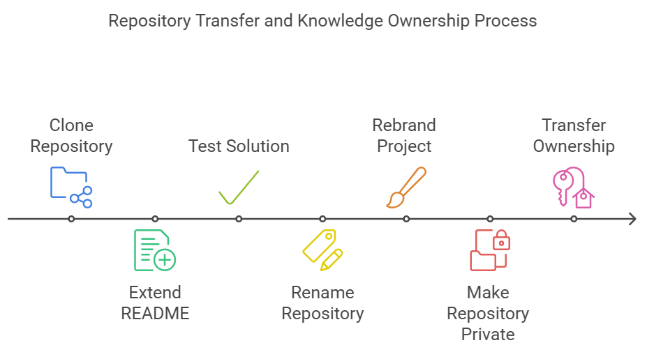

Using Jupyter notebooks and well-documented README.md files significantly enhances knowledge sharing, collaboration, and knowledge transfer. Jupyter notebooks allow for a blend of executable code, visual outputs, and explanatory text, making it easy for collaborators to understand the logic behind the code and experiment with it interactively. README.md files provide essential project information, instructions, and context for how to use and understand the repository. Together, these tools help communicate the project's purpose and functionality, making it accessible for both new and experienced team members.
When transferring a GitHub repository's ownership, all code, documentation, issue tracking, and project history are successfully transferred to the new owner. The README.md and other documentation within the repo continue to provide context, ensuring the code remains usable and understandable. Along with the repo, collaborators, branches, and version histories are preserved, allowing the new owner to seamlessly continue the project’s development while maintaining full knowledge of prior work.
This process is used to easily transfer knowledge and code for one company to another.
Clone the Existing Repository:
Clone the original repository to my local environment, allowing me to work on it independently.
Extended the Solution README:
After cloning, I enhance the README file by adding more detailed information about the solution, including its usage, features, and functionality.
Tested the Solution:
I tested the solution thoroughly using the appropriate dataset to ensure it functions as expected.
Rename the Repository:
I renamed the repository from solution_name to solution_name_sn to reflect the updated solution and distinguish it from the original.
Rebrand the Project:
Rebrand the project and solution to align with the target company’s brand image and likeness. This included updating logos, color schemes, and naming conventions to match the company’s branding. Additionally, I transferred any relevant contact points and URLs to the target company.
Make the Repository Private and Invited Collaborators:
Set the repository private to protect its content and then invited the target company as collaborators, allowing them access to the repository.
Transferred Ownership to the Target Company:
Finally, I transfer ownership of the repository to the target company via GitHub (github.com), ensuring they have full control over the repository moving forward.
This version now includes the rebranding step and transfer of contact points and URLs as requested.
Here’s the corrected list with each feature contributing to the knowledge transfer process:
Notebook Features: Provides a structured, interactive environment that allows users to easily follow and modify the workflow, facilitating understanding.
Self-Documenting: Automatically identifies and highlights major steps in the notebook, making it easier for others to follow the logical flow without additional explanations.
Self-Testing: Implements unit tests for each function, ensuring reliability and making it easier for others to validate the solution when adapting or extending it.
Easily Configurable: Allows for easy modification through a config.INI file using keyname-value pairs, making the solution adaptable to different needs with minimal effort.
Includes Talking Code: An option that uses a simulated voice to explain the major steps of the code while it runs, providing real-time, spoken guidance. This makes the learning process more engaging and accessible for users unfamiliar with the code.
Self-Logging: Automatically logs key actions and outputs, making it easier for others to track and understand the code’s behavior without diving into the codebase.
Self-Debugging: Enhances Python’s standard debugging to simplify the identification and resolution of issues, helping others quickly troubleshoot and learn from errors.
Low Code or No Code: Solutions are typically under 50 lines of code, reducing complexity and making it easier for others to grasp the core logic and make modifications.
Educational: Includes educational dialogue and background material to provide context, making it easier for users to understand both the technical and theoretical aspects of the solution.
This refined list now clearly describes how each feature enhances the knowledge transfer process, making the solution easier to understand, adapt, and use.
Individual Component in its Own Repository: Each component of the solution is isolated within its own GitHub repository, allowing for clear separation of functionality, easier management, and targeted collaboration on each part of the overall project.
Jupyter Notebook Format: All code is provided in a Jupyter notebook, making the solution interactive, easy to follow, and executable step-by-step. This format supports code execution alongside documentation and visualization.
README.md File: Each repository includes a README.md file that explains the purpose, usage, and structure of the solution, offering a detailed description of the component, how to run it, and its key features.
Required Libraries: The repository lists or includes all required libraries and dependencies, typically in a requirements.txt file, ensuring anyone using the component can install the necessary packages easily.
All Code: The complete solution code is contained within the Jupyter notebook, ensuring that every aspect of the component is available in one place for execution, modification, and learning.
Test Framework: Each repository includes a testing framework to ensure the functionality of the code. This framework validates the correctness of the solution through unit tests, helping others verify and extend the solution without breaking it.
Process Logs: Logs of the code execution process are included or generated within the repository to track what has been run, errors encountered, and system outputs, providing transparency and an audit trail of code behavior.
Data Storyboard: The repository contains a data storyboard that visually explains all formulas and logic used within the solution, helping users understand how data is processed and interpreted in the context of the solution.
Test Results: Results from running the test framework are documented within the repository, offering insights into the solution’s correctness and robustness. These test results serve as validation that the code works as expected.
This setup ensures that each repository is self-contained, with all necessary components for understanding, testing, and running the solution, making it easier to transfer knowledge and maintain clarity across various aspects of the project.
The goal of this solution is to Jump Start your development and have you up and running in 30 minutes.
To get started with the Knowledge Transfer Solution solution repository, follow these steps: 1. Clone the repository to your local machine. 2. Install the required dependencies listed at the top of the notebook. 3. Explore the example code provided in the repository and experiment. 4. Run the notebook and make it your own - EASY !
These features are designed to provide everything you need for Knowledge Transfer Solution